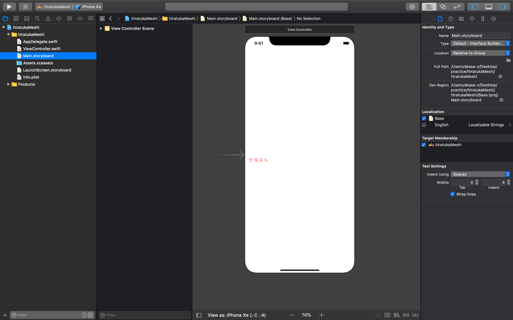

平塚駅周辺の飲食店をまとめて既存の地図アプリよりも詳細な地図を作成する。
とりあえず最終目標となるアプリの完成予想図を下書きしてみた（絵は下手）。

この"ガスト"と"洋食"の隣にあるボタン（絵が下手）を押すと、

このように店の詳細の画面に移る（絵が下手）。
まずはアプリを立ち上げたときに地図を表示することから始める。
地図を表示するのはとても簡単で、Xcodeから新規プロジェクトを立ち上げたら、storybordの右上のobject検索から、

MapkitViewをstorybord上にドラッグ＆ドロップ

autoconstraintsをして完了
simulatorを起動するとこうなる。

このままだと範囲が広すぎていちいち平塚までズームしていくのが面倒。
今回は平塚駅周辺の飲食店を表示するので、アプリを起動した時に平塚駅スタートになるように設定する。
最初にstorybord上のmapとviewcontrollerを紐付ける

この時に使用するのは以下のコードで、
let coordinate = CLLocationCoordinate2DMake(35.327616, 139.350467)
これはアプリ起動時に中心となる座標を指定する。ちなみに座標はgoogleマップで検索し取得したものを使用した。
let span = MKCoordinateSpan(latitudeDelta: 0.005, longitudeDelta: 0.005)
このコードで起動時の範囲の広さを指定する。数値が小さければ小さいほど範囲が狭くなり、ズームした状態で始まる。
let region = MKCoordinateRegion(center: coordinate, span: span)
mapView.setRegion(region, animated:true)
最後に上二つの座標と表示範囲からMapViewにセットして完了。
このコードを追加してsimulatorを実行した結果がこちら

ここまではとても順調だったが、ここからなかなか上手くいかず、時間がかかってしまった。まずピンを一本立てることにして、これは難なくこなせた。
ピンを立てるにはある店舗（よく行く油そばの店）の緯度経度を指定し、
let annotation = MKPointAnnotation()
annotation.coordinate = CLLocationCoordinate2DMake(35.329480,139.351771)
annotation.title = "油そば専門店ぶらぶら 平塚店"
annotation.subtitle = "ラーメン"
self.mapView.addAnnotation(annotation)
こうすることで、ピンを建てることができる。

前項で飲食店を緯度経度を指定しピンを立てることができたが、複数立てる時には少し面倒。
そこで、
let annotation = MKPointAnnotation()
annotation.coordinate = CLLocationCoordinate2DMake(35.329480,139.351771)
annotation.title = "油そば専門店ぶらぶら 平塚店"
annotation.subtitle = "ラーメン"
self.mapView.addAnnotation(annotation)
このコードを、
func addAnotation( _ latitude: CLLocationDegrees,_ longitude: CLLocationDegrees, _ title:String,_ subtitle:String) {
let annotation = MKPointAnnotation()
annotation.coordinate = CLLocationCoordinate2DMake(latitude, longitude)
annotation.title = title
annotation.subtitle = subtitle
mapView.addAnnotation(annotation)
}
このような関数を宣言することで、
addAnotation(35.329480,139.351771, "油そば専門店ぶらぶら平塚店","ラーメン")
この一文だけで先ほどのコードと同じような動きができる。
さらに、
addAnotation(35.327152,139.353333, "中国料理 大陸","中華")
addAnotation(35.329104, 139.345826, "大好きや 西口店","居酒屋")
という２店舗（これもよく行く店）を追加してみて実行すると、次のような状態になる。

ピンを複数立てやすくなったので、今度はピンに吹き出しをつけて、そこにボタンを取り付け、店舗の詳細画面に遷移させたい。
具体的には次のようなイメージ。

そのためには次のようなコードが必要
let button = MKMarkerAnnotationView()
//定数"button"の宣言
button.canShowCallout = true
//calloutの表示をオンにする
button.rightCalloutAccessoryView = UIButton(type: UIButton.ButtonType.detailDisclosure)
//calloutの右部分にボタンを追加する
・・・できない。コードはあってるはず。
１０日間ほど費やしたけど全然原因がわからないので、とりあえず置いておくことにした。
未解決。
ボタンがどうしてもつけられないのでとりあえずボタンを追加できたと思い込んで次のステップへ。
次はボタンを押して店舗の詳細画面に遷移させる。
遷移させるためにはまずナビゲーションコントローラーという画面遷移をナビゲーションするクラスを追加する。

次に遷移先の画面を用意する。
今回は遷移先でタブをつけてさらに画面を変化させたいので、通常viewcontrollerを置くところをtabbarcontrollerというものを置く。

これを置くことで、画面下部にタブが付いた状態の画面が自動で作成される。
これらの画面でそれぞれ、「メニュー」「住所」「アクセス」「連絡先」というタブを作成
作り方はviewcontrollerをタブの数だけ用意し、あとはtabbarcontrollerとそれらをつなげていく。

あとは地図の画面に本来ピンの横につくであろうボタンを設置（ここではnext）してそれとtabbarcontrollerをつなげれば、枠組みは完成。
ここからは画面内の画面を作っていく。
まずはメニュー画面から。
メニュー画面は店の種類と店名を上に表示し、その下にメニューを載せていく。